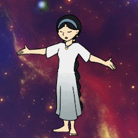
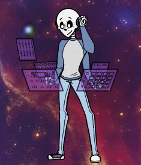
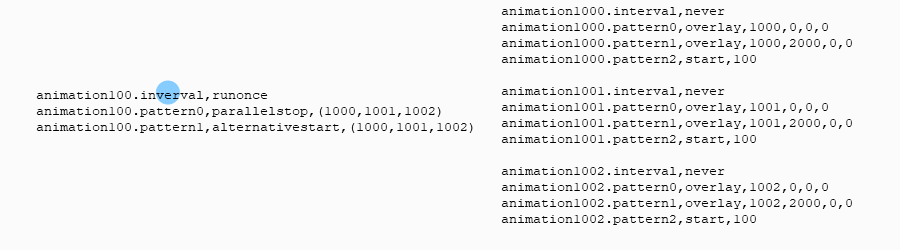

What is a Ping Pong loop, and why do you need one? I'm glad you asked, because I'm very excited about them! The basic idea is this: What if you need a set of animations that appear randomly, but you need to make sure one is always showing no matter what? Additionally, what if said animation needs to break the silhouette of your ghost, but there's stuff layered behind it which means you can't use replace?
Here's an example from my FLUX shell, Cibus! Her arms can never disappear, but they also need to be chosen randomly. I can't use replace, either, because her hair is a dressup item and replace would cut into that.
I used to use replace, back when she only had one hairstyle, but there was still an issue with that. If you have multiple animations set to random, and they overlap each other, the one with the highest number (if you use the default sort order) will always be on top of the other ones. So, one set of arms was always appearing on top of the other arms and overriding them, leading to that pair of arms showing up more often and causing odd stutters in the animation. This may not matter much to you if you're not worried about getting your shells perfect, but it drove me crazy. (Side note, I found out later that you could use a special option to make the arm animations be exclusive to each other, but that might still be a little wonky I think)
Here's another example with the master shell from FLUX! All of the arms animate independently without interrupting each other, and without disappearing. Even the head bobbing is a ping pong loop. This would not be possible with replace at all, since the arms in front would make the arms in back disappear.
Ok, now that I've hopefully convinced you that ping pong loops are worth using, how do they work? First of all, each ping pong loop needs a 'control animation', and multiple other animations to be randomly called. (As a note, I'm writing in the new definition here, but it should work in the old definition too! If you're not sure what the difference is, I have a guide [here].)
The basic idea is this: you create one animation that controls all the rest. The control animation calls one of the other animations, and when that animation finishes playing, it calls the control animation again. The control animation says ping, the animation it calls says pong, and it goes back and forth forever, randomly picking a different animation to call each time.
All of that happens super fast, the gif is just to give you a general idea of what's going on. I'll break down each bit of code, so you can see what it's really doing.
animation100.interval,runonce animation100.pattern0,parallelstop,(1000,1001,1002) animation100.pattern1,alternativestart,(1000,1001,1002)
This is what I call a control animation. It has a runonce method so that it's always called immediately when this surface is chosen. (Though, if you want your loop to start only when you call it with a \i[] tag, you could give it the never method.)
The first pattern uses a new (at the time of writing) method called parallelstop. Make sure your SSP is up to date so you can use this! What it does is stop ALL the animations specified in the parenthesis there. So animations 1000, 1001, and 1002 will all be stopped at once. Then, it uses the method alternativestart, which picks one of the animations in the parenthesis to run at random.
Now, once it has chosen one of these other animations, what does that animation's code look like?
animation1000.interval,never animation1000.pattern0,overlay,1000,0,0,0 animation1000.pattern1,overlay,1000,2000,0,0 animation1000.pattern2,start,100
As you can see, this animation has the never method, so it doesn't activate unless the control animation calls it. It overlays itself instantly in pattern 0 so that there's no delay; and then in pattern 1 I have it overlay itself a second time, this time with a wait time of 2000ms. That way, this animation will appear instantly, but also last for 2 seconds before it ends. Once the 2000ms are up, pattern 2 uses start to call the control animation again. The control animation uses parallelstop to make this animation disappear before the next animation is called!
But wait, why not just have animation1000 disappear on its own by setting the surface to -1 before calling the control animation again? Well, it's down to a weird little issue in SERIKO that I discovered. If you hide the surface and then switch to another animation with start/alternativestart, sometimes (but not always) there is a tiny bit of delay, and that causes a noticeable flicker. It's very annoying. But, if you hide the previous frame with stop and immediately start another one in the same animation, no more flicker! And thankfully, now that parallelstop has been added, it's pretty simple and tidy to set that up.
And that's it! Here's an example of a full ping pong loop.
//Control animation animation100.interval,runonce animation100.pattern0,parallelstop,(1000,1001,1002) animation100.pattern1,alternativestart,(1000,1001,1002) //Arm behind back animation1000.interval,never animation1000.pattern0,overlay,1000,0,0,0 animation1000.pattern1,overlay,1000,2000,0,0 animation1000.pattern2,start,100 //Arm down animation1001.interval,never animation1001.pattern0,overlay,1001,0,0,0 animation1001.pattern1,overlay,1001,2000,0,0 animation1001.pattern2,start,100 //Arm up animation1002.interval,never animation1002.pattern0,overlay,1002,0,0,0 animation1002.pattern1,overlay,1002,2000,0,0 animation1002.pattern2,start,100
Now, I imagine that if you add a lot of these, you might start to get some lag. But so far, I've had good success with this technique! You can add more to it, too. I've used it to control a set of random expressions before, and each expression animation actually ended with its own alternativestart method instead of start. They had a chance of going back to the control animation, or picking a blink animation instead, so that each expression had a chance to randomly blink. It's pretty flexible! Here's an example of that:
//Control animation animation100.interval,runonce animation100.pattern0,parallelstop,(1000,1001,1002,1003) animation100.pattern1,alternativestart,(1000,1001,1002,1003) //Normal smile animation1000.interval,never animation1000.pattern0,overlay,1061,0,0,0 animation1000.pattern1,overlay,1061,1000-8000,0,0 animation1000.pattern2,alternativestart,(100,10000) animation10000.interval,never animation10000.pattern0,overlay,100000,50,0,0 animation10000.pattern1,overlay,100001,100,0,0 animation10000.pattern2,overlay,-1,30,0,0 animation10000.pattern3,alternativestart,(100,1000) //Skeptical animation1001.interval,never animation1001.pattern0,overlay,1062,0,0,0 animation1001.pattern1,overlay,1062,1000-8000,0,0 animation1001.pattern2,alternativestart,(100,10001) animation10001.interval,never animation10001.pattern0,overlay,100000,50,0,0 animation10001.pattern1,overlay,100001,100,0,0 animation10001.pattern2,overlay,-1,30,0,0 animation10001.pattern3,alternativestart,(100,1001) //Closed eyes animation1002.interval,never animation1002.pattern0,overlay,1063,0,0,0 animation1002.pattern1,overlay,1063,1000-4000,0,0 animation1002.pattern2,start,100 //Concerned animation1003.interval,never animation1003.pattern0,overlay,1064,0,0,0 animation1003.pattern1,overlay,1064,1000-8000,0,0 animation1003.pattern2,alternativestart,(100,10003) animation10003.interval,never animation10003.pattern0,overlay,100000,50,0,0 animation10003.pattern1,overlay,100001,100,0,0 animation10003.pattern2,overlay,-1,30,0,0 animation10003.pattern3,alternativestart,(100,1003)
The code that is indented here is the blink animations; I indent them like this so I can easily tell them apart from the normal expressions. That's just a personal preference, though. As you can see, each expression except for the one with closed eyes has a chance to go to a blinking animation. The blinking animation itself has a chance to go back to the control animation, or to call the expression it came from again. This leads to a fairly natural and random blinking, despite having randomized expressions. The blinks themselves actually do hide their surfaces before it reaches the alternative start, but that's because these blinks are set up to overlay on top of the expression. So it's fine for them to completely disappear when they're done.
If you have any questions about this technique, feel free to ask me about it! Or, you might check out the coding of my FLUX shells, since they make extensive use of these loops.